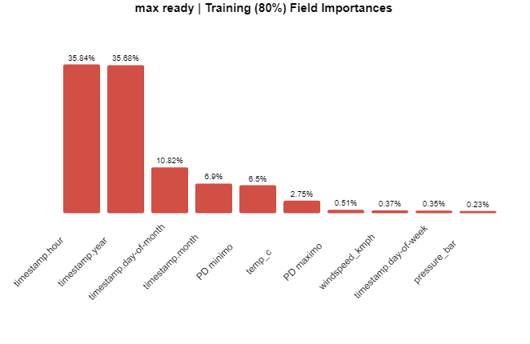
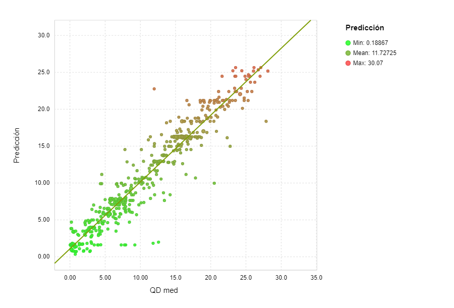

Se dispone de un histórico con las mediciones disponibles en la zona de Burgos con una longitud temporal
de 5 años. El objetivo del estudio es poder realizar la predicción en una determinada
zona de la superficie establecida en función del resto de variables.
Se establece pues, el análisis y la elavoración de modelos haciendo foco en el Caudal máximo en
Villalonquéjar.
A continuación se muestran los datos de entrada y salida obtenidos.
A partir del estudio y entrenamiento de los datos se han extraido una serie de modelos matemáticos y algoritmos para la predicción del caudal máximo.
Los aquí representados son una selección determinada por su coeficiente de acierto y pequeño margen de error.
En esta sección se pueden observar distintos datos derivados del estudio tales como:
En la siguiente gráfica podemos observar aquellos parámetros más influyentes en nuestra variable objetivo.
Podemos obsevar que lo más influyente en el caudal es la fecha, seguido por la presión mínima, la temperatura y presión máxima
El siguiente dibujo representa la dispersión de la predicción realizada con respecto al dato real.
En esta sección se pueden probar las predicciones realizadas por uno de los modelos
desarrollados. Para este caso, el modelo en cuestión tiene un
R= 0.92
No es el modelo con más precisión pero si el disponible actualmente para la realización de estas
predicciones en "tiempo real"
.